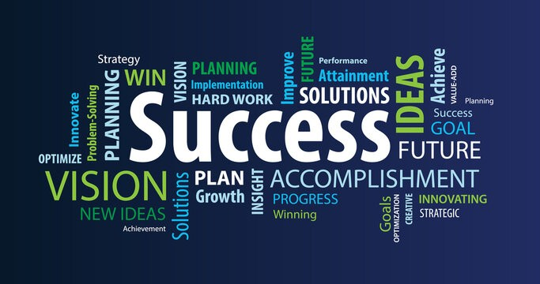
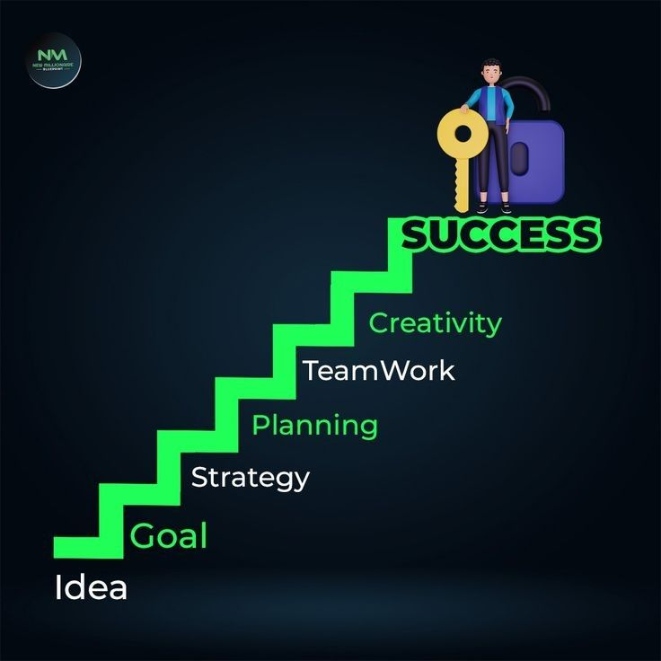

Success
Success is often seen as the achievement of a goal, but its true meaning goes far beyond accolades or material rewards. It is deeply personal and can be defined in countless ways—whether it's mastering a skill, overcoming adversity, or simply finding happiness and purpose in daily life. True success involves growth, resilience, and the ability to learn from failure. It's not just about reaching the top, but also about the journey, the lessons learned, and the person one becomes along the way. Ultimately, success is most meaningful when it aligns with one's values and brings a sense of fulfillment.
 Here are some key points of success:
Clear Goals: Knowing what you want to achieve provides direction and motivation.
Discipline and Consistency: Regular effort and self-control are essential for long-term progress.
Resilience: The ability to recover from setbacks and keep going is crucial to overcoming challenges.
Continuous Learning: Staying curious and open to improvement helps you grow and adapt.
Positive Mindset: Believing in yourself and staying optimistic can keep you motivated through tough times.
Time Management: Using time effectively ensures productivity and reduces stress.
Work Ethic: Putting in the effort and going the extra mile sets successful people apart.
Adaptability: Being flexible and ready to adjust plans helps you navigate change smoothly.
Support System: Encouragement and advice from mentors, friends, or family can make a big difference.
Self-Awareness: Understanding your strengths, weaknesses, and values helps you make better decisions.